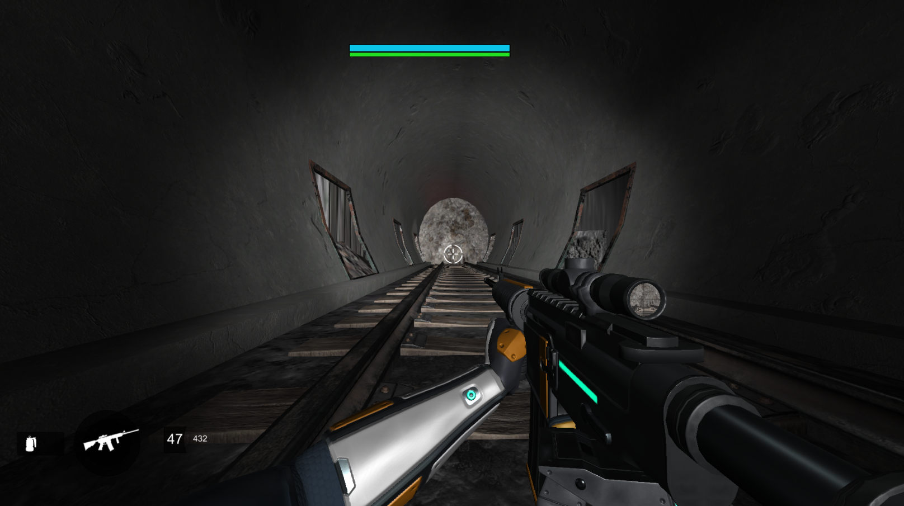
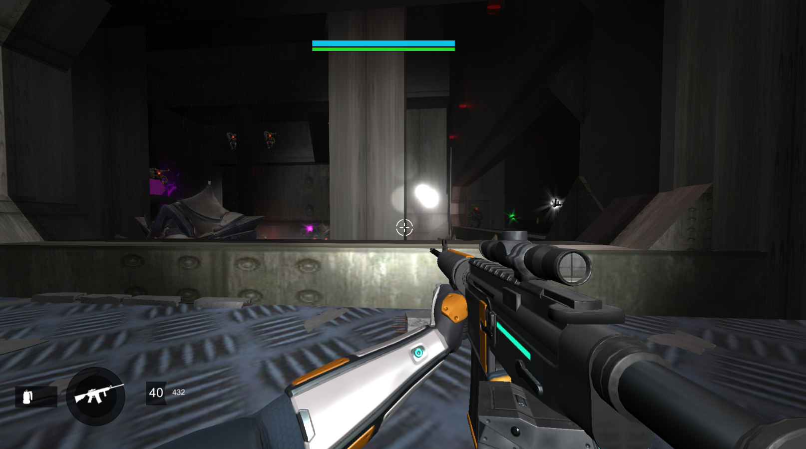

Mission Brief
This is a Slideshow outlining the context of the mission,
the overall story, and how it fits into the game.
Moment-to-Moment Gameplay Notes
Here I'll do a moment-to-moment walkthrough of the level.
I'll break down the gameplay and the decisions you can make at each step.

#1: You begin in a long tunnel.
It's dark, and your flashlight attached to your gun gives you the most light to see.
Your Ghost also shines his light behind your back, making the area immediately around you easier to see.
On your HUD, you have your health and shields at the top.
Your health regens at around the same rate it does in Destiny 2.
You have 4 weapons to choose from.
An Auto Rifle: with the real sound FX of 'Origin Story', one of my favourite D2 autos.
A Shotgun: With SFX from the 'Retold Tale', my god tiered go-to PvP weapon.
A Rocket Launcher: With SFX of 'Truth'
A Sniper Rifle: With SFX of 'Tatara Gaze'.
Weapons have been tuned to feel as close as possible to those weapons,
and at some point I'll import their actual models for gameplay.
I've also tuned all the weapons to feel really good to shoot,
which is a staple of Destiny and one of the best parts of the game.
The character moves just like a Hunter.
You can triple jump, and movement and momentum is as close as I could get to the floaty jumps in Destiny 2.
You can throw Grenades with 'Q'.
They behave most like Solar Grenades in Destiny, and provide a source of light in dark areas.
Currently grenades don't have a cooldown, so you can spam them if you want. :)
You can sprint and you can ADS, although the ADS sensitivity modifier isn't working properly yet.
Back to the Level:
You begin in a dark tunnel. There is a light pointing towards the end.
Other openings have been closed off due to rubble falling from the drilling.
As you walk through the tunnel, the ground shakes and Rasputin begins talking to you in Russian.
#2: End of the Tunnel
In the other room is a Taken Blight, which slows your movement if you get in proximity.
Shooting the blight will destroy it.
#3 Bunker Entrance
In the room is a tall wall with a Rasputin symbol on it.
It means we're close to Rasputin's bunker.
The ground has been broken open, and chunks of concrete are all over the place.
There's a strong red light shooting up from the hole.
4 Looking into the hole
Looking down into the hole, there's a series of platforms you can climb down.
The red light continues down.
The red light continues down.
5 Bottom of the Hole
At the bottom of the hole is an entrance into the bunker.
More red lights.
#6 Bunker Stairway
Jumping into the hole leads you into a stairway that leads down.

#7 Walking by a Window
The window on the left lets you see into the room ahead.
This is a common thing in Destiny, where you get a chance to look into the room before you enter.
It gives you a few seconds to layout the area and think of your strategy.
#8
Another window in the hallway and you see further into the room.
The ground shakes again and Rasputin says something to you in Russian.
Your HUD updates: Defeat the purple glowing enemy.
I've left out a few weapon pickups, and they behave the same as the real game.
Although shotguns and sniper rifles have different ammo inventory.
#9 Entering the First Room
At the far end of the room, a vent is blocked with the same glowing purple energy that the Minotaur Boss has.
###
#10 The Stairs
I've given stairs a specifically high railing, which provides cover and neat angles for shooting.
Moving to the bottom of the stairs, you are behind cover, and can move forward in the room and only need to shoot one Hobgoblin.
#11 Moving Across the Room
Moving across the room, fallen concrete from the collapsed roof provides cover.
You can fight in the middle, or move to the stairs for some high ground.
#12 Atop the Stairs
This side of the room is elevated and provides better sightlines.
Killing the purple Minotaur first will spawn a second wave of ads, but the rest of the ads won't despawn, so it's best to clear the room first.
#13 Railing Angles
Moving along the railing, I've made structural triangles around the pillars to create more spots to strafe in and out of cover.
Rasputin's Symbol shows on the monitors.
I almost forgot. All enemy types of the Vex are in this mission.
Enemy AI
They all have health and behave similarly to the real-game versions.
If you shoot them, they let out the same cries they do in-game.
Goblins sound like Goblins, and Harpies sound like Harpies.
Hitting them plays a random audio sound from a list of around 10-20 game-ripped sounds.
When you kill them, a death explosion plays, and they play a random death sound specific to their enemy type.
Bosses have glowing purple shields, and their eyes have bright glowing orbs on them to show the difference from regular mobs.
All their weapon sounds are also hand-ripped from the game.